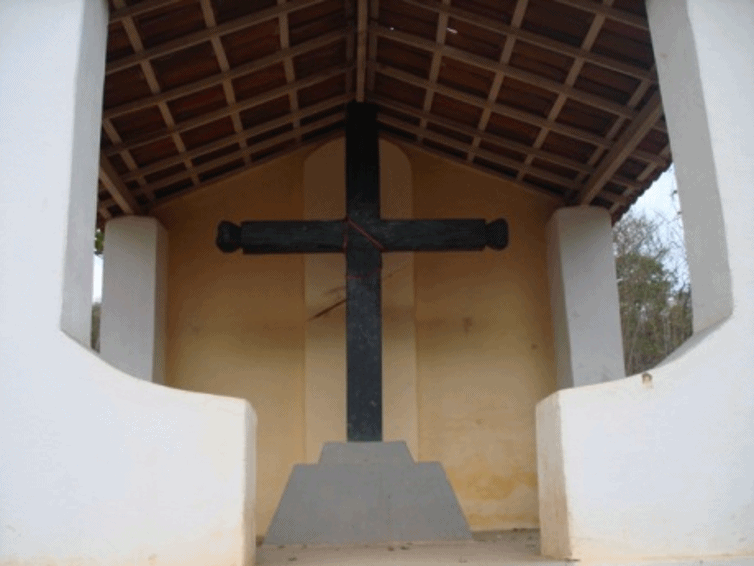

Informações técnicas sobre relevo, população, IDH etc.
| INFORMAÇÕES | |
|---|---|
| Municípios limítrofes | Norte: Oceano Atlântico, Leste: Trairi e Tururu, Sul: Uruburetama e Itapajé, Oeste: Miraíma e Amontada |
| Fundação | 3 de fevereiro de 1823 (198 anos) |
| População total | 137 465 hab. |
| Densidade | 71,90 hab/km² |
| Área total | 1 614,682 km² |
| Clima | Tropical |
| Altitude | 109 m |
| IDH | 0,620 — médio |
| PIB | R$ 1,19 bi |
| INFORMAÇÕES TERRITORIAIS | |
|---|---|
| Número de habitantes | 129 358 habitantes |
| Superfície de Itapipoca |
160 365 hectares
1603,65 km² (619,17 sq mi) |
| Densidade populacional | 80,7 ha./km² |
| Altitude de Itapipoca | 98 metros de altitude |
| Coordenadas geográficas decimais |
Latitude:
-3.49387
Longitude: -39.5769 |
| Coordenadas geográficas sexagesimais | Latitude: 3° 29' 38'' Sul , Longitude: 39° 34' 37'' Oeste |
| INFORMAÇÕES DO MUNICÍPIO | |
|---|---|
| Endereço da Prefeitura Municipal de Itapipoca |
Itapipoca
Prefeitura de Itapipoca
Av. Monsenhor Tabosa, 3027 - Bairro Júlio ITAPIPOCA - CE, 62500-000 Brasil Work (88) 3631-5950 Fax (88) 3631-2158 |
| Telefone da prefeitura |
(88) 3631-5950
Internacional: +55 (88) 3631-5950 |
| Fax |
(88) 3631-2158
Internacional: +55 (88) 3631-2158 |
| Endereço electrónicoda prefeitura |
A carregar...
|
| Site oficial do município | Itapipoca.ce.gov.br |
| INFORMAÇÕES DO ADMINISTRATIVAS | ||
|---|---|---|
| Prefeito de Itapipoca | FELIPE SOUZA PINHEIRO | |
| Partido politico | PT | |
| INFORMAÇÕES DE TRANSPORTE | |
|---|---|
| Transporte urbano disponível | --- |
| Aeroporto |
Aeroporto de Sobral 87.1 km
Aeroporto Internacional Pinto Martins 120.2 km
Aeroporto Pinto Martins 155.5 km
|
| INFORMAÇÕES DE DISTÂNCIA A OUTRAS CIDADES | ||
|---|---|---|
| São Paulo : 2358 km | Rio de Janeiro : 2196 km | Brasília : 1645 km |
| Salvador : 1061 km | Belo Horizonte : 1878 km | Manaus : 2273 km |
| Curitiba : 2653 km | Recife : 727 km mais perto | Goiânia : 1809 km |
| Belém : 1018 km | Porto Alegre : 3199 km | Guarulhos : 2337 km |
| Campinas : 2307 km | São Luís : 537 km | São Gonçalo : 2182 km |
| Distância calculada em linha reta! | ||
Conheça mais sobre a história de Itapipoca.
As terras entre a serra de Uruburetama e ao lado oeste do rio Mundaú, que fazem parte do município de Itapipoca, eram habitadas por diversas etnias indígenas Tupi e Tapuia, entre elas: Tremembé, Anacé, Apuiaré e outras etnias.[6][7] No Século XVII, com definitiva ocupação da terras da Capitania do Siará Grande pelos portugueses, esta região começou a ser ocupada via a lei de Sesmarias. Seu primeiro núcleo urbano, chamado Vila Velha, localizava-se onde hoje fica o distrito de Arapari[8]. O povoado de Itapipoca teve sua colonização oficial em 13 de abril de 1744, com a concessão de uma sesmaria na Serra de Uruburetama ao sargento-mor Francisco Pinheiro do Lago, que, em seguida, a repassou para seu genro Jerônimo Guimarães de Freitas (fundador oficial de Itapipoca) e sua esposa Francisca Pinheira do Lago. Situada entre serras e o mar, foi chamada de São José de 1744 a 1823. Com sua emancipação política a 17 de outubro de 1823, passou a chamar-se Vila da Imperatriz. Com a expansão da pecuária no ciclo do couro e da agricultura do algodão, esta ocupação intensifica-se e o local onde atualmente se localiza Itapipoca consolida-se como centro urbano no século XIX. Em 31 de Agosto de 1915, já com sede administrativa no Arraial de Itapipoca, elevou-se a categoria de Cidade de Itapipoca.[9] Nos planos de ligação Fortaleza-Sobral através dos caminhos de ferro no século XX, surge a estrada de ferro de Itapipoca com três estações: Rajada,[10] Itapipoca[11] e Craúna/Anario Braga.[12] Com a estrada de ferro, Itapipoca consolida-se como centro comercial.
Saiba mais sobre os melhores lugares e o que fazer em Itapipoca.
Igreja do Arapari (P.Nossa Senhora das Mercês)
Localizada na parte serrana, distrito de Arapari, foi construída em 1772. A igreja ainda tem traços da época, e conta com arquitetura barroca sendo um dos monumentos mais velhos da cidade e contando a historia dos primeiros habitantes da cidade, como a do “criador do município” senhor Jerônimo de Freitas Guimarães. De lá, tem-se uma bela vista, sendo possível uma visão geral da parte serrana da cidade dos três climas.
Cruzeiro da Balança
É um monumento histórico situado no intermédio da sede de Itapipoca e o distrito de Arapari. Segundo a lenda um cidadão serrano cujo nome era um certo senhor Júlio, estava com uma enfermidade grave, então fez a seguinte promessa, se fosse curado iria entrar na mata e buscar o maior tronco que encontrasse para fazer uma cruz e colocá-la no cruzeiro. O certo senhor Júlio foi curado, e assim cumpriu o que prometeu, construindo a cruz e colocando-a no cruzeiro, o que viria a ser chamado de cruzeiro da balança, já que no local há fortes ventos, o que faz com que as árvores fiquem frequentemente balançando. O monumento é um dos mais antigos da cidade, e o que mostra e simboliza a fé do povo itapipoquense.
Serra da Canoa
Canoa é uma das serras que rodeiam a cidade de Itapipoca. Dotada de clima e vegetação peculiar, a serra se destaca por sua grande beleza, tornando-a propícia para a prática do ecoturismo. O seu atrativo turístico principal é um monólito chamado “Pedra do Itapicu”, o mesmo é visitado por aventureiros que buscam maior contato com a natureza. Na sua vegetação existem resquícios da mata atlântica, basicamente formada por árvores de grande porte.
Praia da baleia
Baleia está localizada na terra dos três climas, no município de Itapipoca, e fica a apenas 168 km ao oeste de fortaleza. É conhecida por suas praias com grande vocação para o turismo, Baleia compõe o cenário de coqueirais, dunas, lagoas, lagos, jangadas, rios e pôr-do-sol. Sua paisagem única e exuberante oferece ao turista as impetuosidades dos ventos e do sol, comuns no litoral e que excedem na praia da baleia. Para satisfazer os mais exigentes goumeres , temos cardápios variados que vão desde a pizza e massas italianas à diversidades de pratos a base de frutos do mar , seus restaurantes têm como destaque especial o peixe fresquinho, pescado na “riscas”(as poucas milhas da praia) entre eles o ariacó de carne tenra e saborosas .
Praça dos Três Climas
Antes uma lagoa, a praça dos três climas, localizada no centro de Itapipoca, é uma das praças mais importantes da cidade. Fazendo uma alusão aos três climas da cidade, na praça encontra-se uma grande pedra, representando a pedra ferrada, que se localiza na parte serrana da região. Em seguida é possível ver barcos e pescadores empurrando o mesmo, o que simboliza o nosso litoral, tão rico em beleza peculiar e em atrativos naturais. Adiante tem-se um vaqueiro montado em seu cavalo, o que vem a representar o nosso sertão, característico por forte calor do sol e o frio da noite.
Veja como chegar nos melhores pontos de Itapipoca